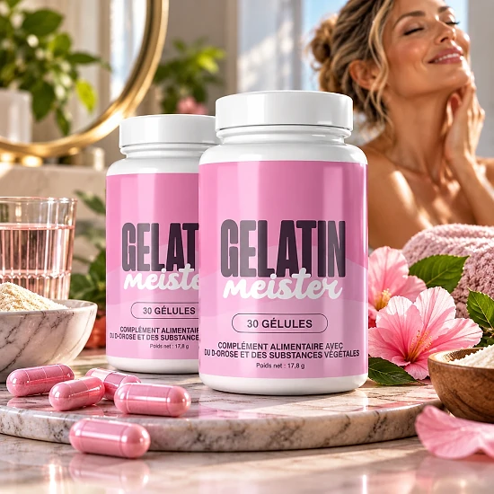

Qu’est-ce que Gelatin Meister et comment agit-il ?
Gelatin Meister se prend sous forme de gélules et se définit comme un mélange minceur naturel. La marque l’a pensé pour la gestion du poids, l’appétit et le métabolisme, dans le cadre d’une vie active. Il concerne surtout les adultes qui veulent un soutien pratique, en plus d’une alimentation réfléchie. La gélule est décrite comme un soutien au sein d’une démarche plus large, pas comme un remède isolé.
Il ne s’agit pas de gélatine à diluer : le flacon décrit un complément contenant du chrome et des substances végétales. On compte 30 gélules dans chaque flacon, pour un mois de prise.
La composition compte onze actifs, comme le vinaigre de cidre, la cannelle, l’orange amère et le resvératrol. Chaque ingrédient aurait été soigneusement sélectionné et dosé, selon le fabricant. D’après le fabricant, la recette ne contient ni additifs artificiels ni substances nocives, et convient à un usage continu.
Sur le plan du mécanisme, le chrome contribue à un métabolisme normal des macronutriments, rappelle la marque. D’un côté, thé vert, Cayenne et orange amère pour le métabolisme ; de l’autre, gingembre et cannelle pour la digestion.
Le fabricant annonce moins de fringales en deux à trois semaines et recommande au moins trois mois de cure.
Distribué en Europe par Digistore24 MSLW Limited, il dispose d’une adresse de retour aux Pays-Bas. La composition, l’utilisation conseillée et les avertissements sont imprimés en français sur le flacon. Le contenu net est de 17,01 g d’après le flacon.
Gelatin Meister n’est pas conçu pour diagnostiquer, traiter, guérir ou prévenir une quelconque maladie. Une alimentation variée reste indispensable, et les effets varient selon les personnes.
Gelatin Meister – Ingrédients
La composition par gélule, telle qu’elle figure sur le flacon, est la suivante :
Chrome à 100 µg : participe au bon métabolisme des glucides, lipides et protéines.
Thé vert à 154 mg : un extrait de feuilles réputé pour ses catéchines.
Vinaigre de pomme à 150 mg : un classique des formules liées à la digestion.
Berbérine à 85 mg : composé végétal présent dans plusieurs plantes.
Cannelle cassia (20 mg) et gingembre (50 mg) : utilisés pour la digestion.
Extraits complémentaires : orange amère, Cayenne, lilas des Indes, ginseng coréen et resvératrol, chacun dosé sur l’étiquette.
L’étiquette précise un resvératrol issu de renouée du Japon, et l’orange amère est connue pour sa synéphrine. La gélule est d’origine végétale, avec de la cellulose et des anti-agglomérants comme excipients.
Grâce aux doses par gélule, on peut comparer facilement la formule avec d’autres compléments. Le chrome est le seul ingrédient affiché avec un pourcentage de VNR. Ces extraits actifs, comme le thé vert et l’orange amère, invitent à lire attentivement les avertissements.
Gelatin Meister – Effets secondaires
Gelatin Meister serait bien toléré dans la majorité des cas, d’après la marque. D’après la FAQ, les effets sont rares et se limitent souvent à de légers troubles digestifs.
Les personnes sensibles doivent savoir que la formule contient thé vert, orange amère et piment. En début de cure, la dose recommandée doit être respectée pour bien évaluer sa tolérance. L’étiquette le réserve aux adultes, l’exclut pendant la grossesse et l’allaitement et fixe une dose maximale.
Une mention particulière concerne le diabète et l’hypoglycémie : un avis médical est nécessaire. En cas d’hypertension ou de fluidifiants sanguins, un avis médical est demandé, avec deux heures d’intervalle. Les autorités de régulation n’ont pas évalué les déclarations de la marque, comme le reconnaît le site. Ces avertissements sont fréquents pour les compléments combinant minéraux et extraits actifs. Un pharmacien est bien placé pour vérifier la compatibilité de la formule avec vos traitements.
Le sceau de sécurité doit être intact avant usage. Face à un inconfort, mieux vaut arrêter et demander l’avis d’un professionnel. La sensibilité est propre à chacun, et un conseil médical permet d’y voir clair. Le plus simple est d’apporter le flacon chez le médecin, pour qu’il examine la liste des ingrédients.
Gelatin Meister – Posologie
Les adultes prennent une gélule par jour, comme l’indique le flacon. Idéalement, la gélule se prend avant un repas principal, avec de l’eau.
Chaque flacon de 30 gélules représente un mois. Malgré une page qui parle de deux gélules, l’étiquette recommande une gélule par jour. Inutile d’ouvrir la gélule, qui s’avale simplement.
Le fabricant souligne la constance : les premiers effets viendraient en deux à trois semaines. Le site parle de résultats plus clairs entre la quatrième et la sixième semaine, et conseille au moins 90 jours.
Le site suggère de combiner la gélule avec une alimentation saine et de l’exercice. Comme l’indique le flacon, un complément n’est pas un substitut à une alimentation variée.
Gardez Gelatin Meister dans un lieu sec, sous 30 °C, hors de portée des enfants. Prendre la gélule au même moment chaque jour aide à rester régulier. Oublier une prise n’est pas grave : on continue le lendemain avec une seule gélule. Un repère simple : noter le premier jour de la cure, un flacon durant un mois. Augmenter la dose n’accélère pas les résultats ; il faut rester à une gélule.
Gelatin Meister – Remboursement
Une garantie satisfait ou remboursé valable 60 jours accompagne Gelatin Meister. Si vous n’êtes pas convaincu, le montant de l’achat peut être entièrement remboursé.
Délai à respecter : 60 jours, et le retour de tous les flacons est obligatoire. Attention : le délai court dès l’achat, et non à la réception.
Étape un : le service client (support@centralmeister.com) doit recevoir votre numéro de commande et le motif. N’oubliez pas votre nom, votre adresse et vos coordonnées dans le message.
Étape deux : envoyez le colis à Gelatin Meister Returns aux Pays-Bas, en notant le suivi. Sans numéro de suivi, la demande de remboursement ne peut pas aboutir. L’e-mail de confirmation fait foi pour la date de commande et simplifie le dossier. Le service client peut expliquer chaque étape si nécessaire, par simple e-mail. Le coût d’expédition du retour reste à la charge de l’acheteur.
Étape trois : la marque contrôle le colis reçu et confirme sa décision par e-mail. Une fois approuvé, le montant revient en 5 à 10 jours ouvrables. Aucun autre moyen que le paiement d’origine n’est utilisé pour le remboursement.
L’assistance est aussi joignable à helpdesk@digistore24.ie ; les conditions détaillées, à lire avant de commander, sont sur le site.
Gelatin Meister – Où l’acheter ?
La commande de Gelatin Meister se fait sur le site officiel, et Digistore24 s’occupe du paiement. Le produit n’est pas présent sur Amazon, en magasin ou en pharmacie, selon la marque.
Chez un vendeur inconnu, impossible de vérifier d’où vient le flacon ni comment il a été stocké. Il y a là un risque réel pour la qualité et la sécurité, sans compter la garantie.
Les acheteurs privilégient la source officielle, qui garantit le produit original et la garantie complète. Chaque commande correspond à un paiement unique, et le service client est à l’écoute à support@centralmeister.com. On peut lire toute l’étiquette sur le site officiel avant de passer commande. La commande officielle assure un produit conforme à l’étiquette publiée. Quelques secondes de vérification avant l’achat suffisent souvent à éviter un faux produit. Commander officiellement permet de bénéficier pleinement du service client.
Avant le paiement, prenez quelques secondes pour vérifier l’adresse du site officiel de Gelatin Meister.
Pour être sûr d’obtenir le produit authentique, la plupart des utilisateurs choisissent de passer par le site officiel.
Gelatin Meister est-il une arnaque ?
À la lecture du site et du flacon, Gelatin Meister ne ressemble pas à une arnaque. Gelatin Meister est un complément commercialisé par Digistore24, plateforme sérieuse, et conçu pour le contrôle du poids.
Le tableau nutritionnel donne la dose précise des onze actifs. La fonction citée pour le chrome est reconnue.
L’étiquette nomme Digistore24 MSLW Limited et donne une adresse de retour à Moordrecht. Ces éléments ne promettent rien, mais la vente est encadrée par des sociétés identifiables.
Il faut garder la tête froide face au minuteur et aux alertes de stock de la page de commande. Les promesses de « brûler les graisses » et les études évoquées sans source invitent à rester critique. Gardez des attentes raisonnables et fiez-vous à l’étiquette. Pour se faire un avis, il faut respecter la durée de cure recommandée. Les sociétés impliquées dans la vente sont identifiables, ce qui rassure.
La garantie satisfait ou remboursé de 60 jours est accompagnée d’une procédure claire. Chacun réagit à sa façon, et un médecin reste la référence en cas de souci.
Les adultes qui veulent accompagner leurs efforts sur le poids peuvent envisager Gelatin Meister, idéalement via le site officiel.
Pour vérifier les détails du produit ou sa disponibilité actuelle, le site officiel de Gelatin Meister reste l’option la plus sûre.

Vérifier la disponibilité sur le site officiel